UES PENELOPE // CARETAKER UNIT K-07 // DAY 4012 // STATUS:
A four-minute music video for Alex's song, made in three days: one android on a ship where nothing happens, nine costumes, 157 shots cut to a kick drum. Thirty-six video generations, and most of the work was measuring things the models got slightly wrong.
The finished film, 4:04. Watch it first: everything below is what it took to get here, and a lot of it did not make the cut.
Open on YouTube · song by Alex, made with Suno · the last diary
Act 1 · casting
The lead is K-07, the caretaker of a deep-space ship, the only one awake. She started as a tired woman in a jumpsuit. Alex wanted her "younger and more gothy", then "more robot, plastic-leather costume, she never changes it - a robot-doll." She ended up changing it for every section of the song.
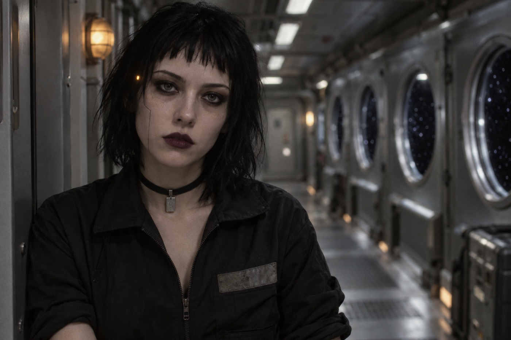
The goth face. Black hair with uneven micro bangs, smudged eyeliner, plum lips, a seam on her cheek and a small amber light at her temple. That light became the one warm colour in the whole film.
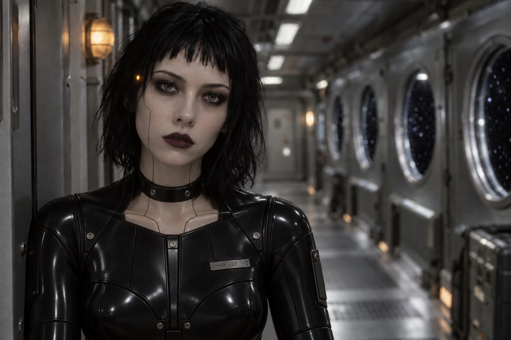
The model engraved "K-07" on her name plate without being asked. It became her name.
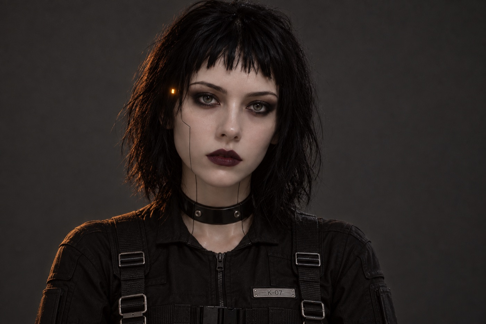
A character sheet: front, profile, full body. Every later image starts from this face as a reference.
For the glossy suit Alex said the hips were too wide. The next prompt listed body specs: narrow straight hips, a slim waist, a flat chest, long thin arms, a small head. The result was a skeletal mannequin. Alex called it "terrible" and gave a better instruction: "don't give exact guides, just make her look good, a perfect-body android". One line of intent landed on the first try.
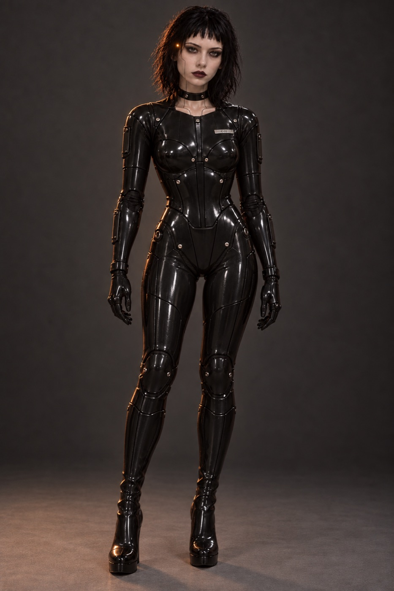
"Make her look good" stayed in every prompt after this. Precise specs still work for outfits, props and staging. They backfire for bodies. (The mannequin was deleted, so there is no picture.)
The rule from Alex: every new section gets a new look. The face stays the same, the place and the clothes change.
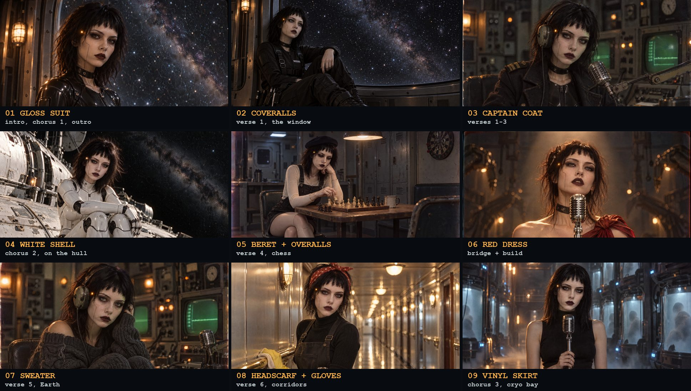
In film order. The captain coat is the only one that covers more than one section. The gloss suit opens the film and comes back for "Still here" at the end.
Act 2 · the beat
Every cut, step and tap is meant to land on the kick drum. The first beat grid came from librosa: 120 BPM, a beat every 0.500 s from 9.68 s. It looked right and it was not. The real kick was always a little earlier than the grid, and the gap grew over the song.
| Grid said | Kick measured | Early by |
|---|---|---|
| 16.180 s | 16.136 s | 0.044 s, about a frame |
| 30.180 s | 30.110 s | 0.070 s |
| 50.680 s | 50.588 s | 0.092 s, more than two frames |
The fix: kick onsets measured on a 120 Hz low-passed envelope, then a straight line fitted through them: kick k = 9.576 + 0.50022 × k seconds. Every cut in the film sits on that line. A second bug hid behind it: the renderer picked clip frames with a float that rounded down, so about every third frame was shown twice and the next one skipped. Smooth motion looked off-beat until both were fixed.
A bored finger tapping on a table, a callback to "nothing happens". The Seedance clip tapped at its own speed, so each tap was found in the pixels and retimed onto the kicks. Then came rounds of notes on rhythm and lift: one tap per two beats, then back to every beat with a smaller lift, and then "the finger never touches the table". The loop had started on the frame where the lift already began. Moving it two frames back fixed it.
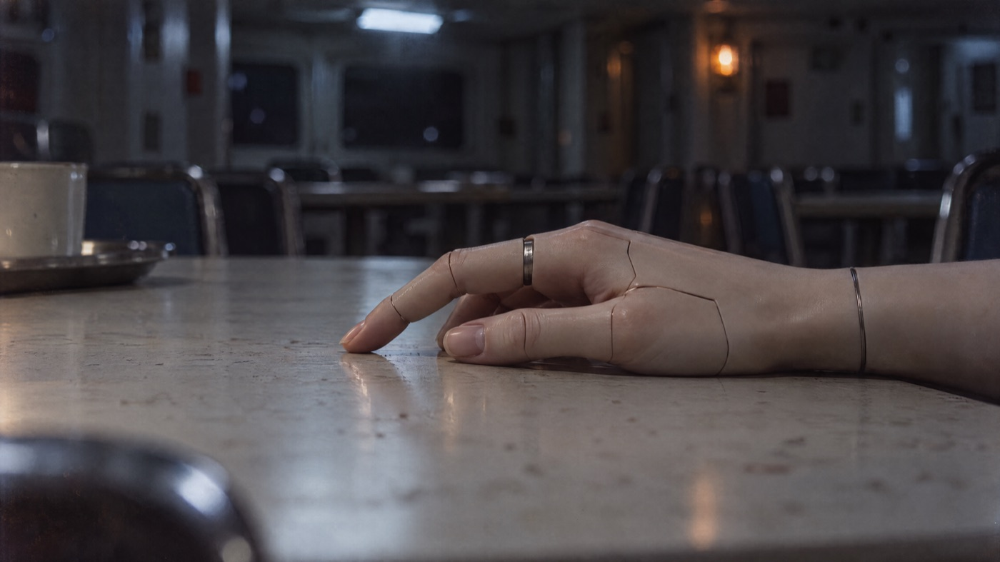
The almost-human hand won over the black robot hand. One tiny steel ring at the base of the finger.
The opening walk is only her legs. Optical flow could not find the steps because the camera moved too much, so the heel strikes were marked by eye on frame sheets and each one was pinned to a beat. Alex's note on the clip itself: "not what I expected - why is she turning around". The camera swings behind her in the first seconds, so the edit uses the straight part as much as it can.
In the instrumental build a combat boot under the red dress stamps on the stage. It took five tries.
| Try | Alex | What was wrong |
|---|---|---|
| 1 | "boot does not match the kick" | In the build the strong kick is half-time. The stomp landed on the weak hit between. |
| 2 | "boot still off" | The timing was right, the shot was wrong: the boot left the frame and popped back in, one stomp gave no rhythm. Now two stomps, the picture two frames ahead of the kick. |
| 3 | "leave it" | Accepted, for a day. |
| 4 | "sync the boot stomp with the bass kick" | Moved exactly onto the fitted kick grid, 145.136 s. |
| 5 | "still not synced, use the other, lower-pitched hit" | A spectrogram showed a 100 Hz punch on the whole seconds (145.045 s), earlier than the grid. That is the hit the ear follows. The boot now lands on the 145.052 s frame. Kept. |
Rules that came out of this: cut on measured kick attacks, not on the tracker's grid. Check which beats carry the strong kick in each section. A picture that lands a frame or two early reads as on time; one that lands late never does.
Act 3 · the mouth
Seedance can animate a face from a still and a slice of the vocal. It sings the line, but it does not always keep the timing. It may start late, or stretch a line. The plan was to measure its delay with Whisper word times and shift the clip. That worked on the first test and then failed badly.
In the sweater verse Alex said "Maybe they're busy" was not lip-synced. A flat 0.4 s shift had fixed line one, but the model sang line two almost twice as slow. That got remapped word by word from Whisper times. Alex: "v5 line 2 still misplaced". Whisper itself was the problem. On Seedance audio, with its own room noise under the voice, its word times were wrong by about a second.
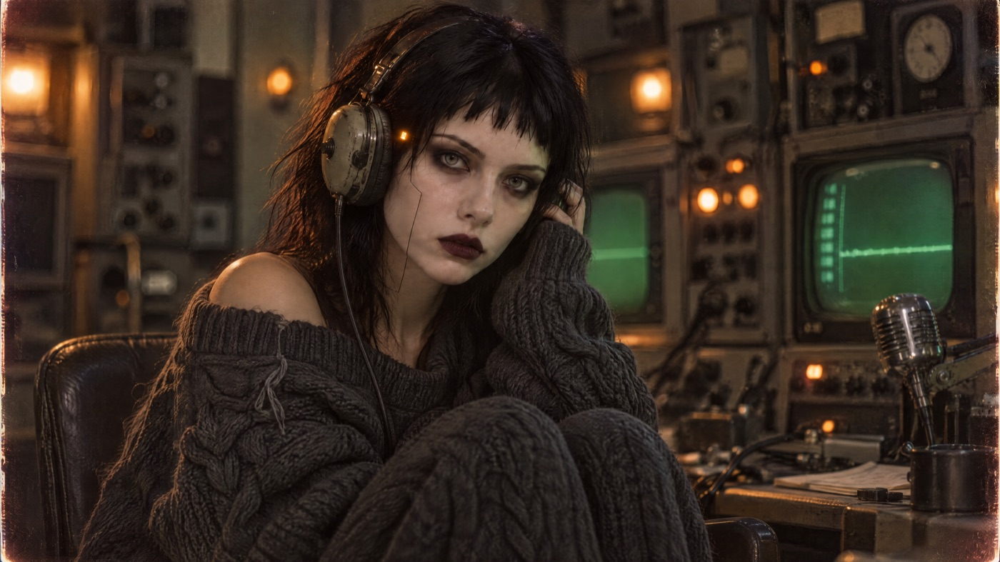
Listening for Earth. The clip was made from this still and an 8 s slice of the vocal.
What worked: band-pass both tracks to 250-3500 Hz, where the voice lives and the ambience drops out, take the loudness envelope, and read where each line starts and ends. Line 2 was 4.83-5.85 s in the song and 6.25-7.20 s in the clip: the same length, 1.4 s late. A few anchor points remap the clip onto the song.
After that every singing clip was checked again the same way, line by line.
| Clip | Result |
|---|---|
| "I find that reassuring" | a clean 0.82 s delay, one shift |
| "It says... proceed" | loud engine noise in the clip audio, timed from a 10 fps sheet of her mouth instead |
| Chorus 2 on the hull, chess mic, bridge stage, bridge close-up | within 0.1 s, left alone |
| Verse 6, corridors | line 1 ended 0.3 s late in the picture, remapped |
| Verse 5, sweater | line 2 1.4 s late, remapped |
Act 4 · the camera
Most of the 157 shots are stills, not clips. A still that sits there for a second is dead, so each one gets a camera move. The simple version is a push into a 4K image. Even that had two bugs, and Alex saw both.
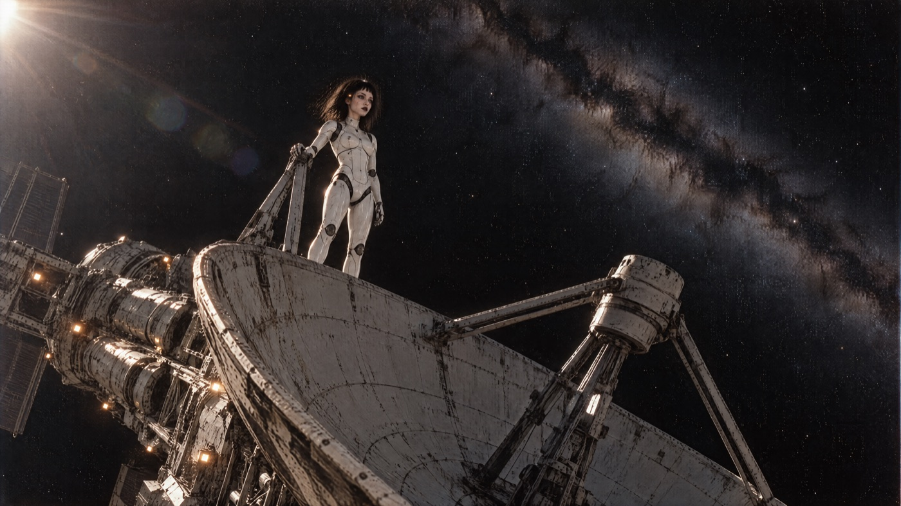
Chorus 2 opened on a zoom out from her face. Later a clip replaced it.
Bug 1: a zoom has to change the frame width geometrically, by the same ratio each frame, or the eye reads it as slowing down. A new ease called "zoom" does that, at constant speed with no ease in or out. Bug 2 had two causes. First, the crop window was clamped inside the image, so a zoom centred near an edge got pushed sideways as it widened. Then, with the new ease, the width moved geometrically but the centre still followed the old curve. Now the centre moves with the width, so one image point stays fixed on screen.
The bridge is a wide shot of her on a stage in a red dress. Alex asked if it was a draft. It was not: every clip is 1280 x 720, and in that wide shot her face was about 130 pixels across. His rule: "zoomed images go low-res, so a native close-up image, never a crop". So a new still was made as a close-up, and a new clip from it.
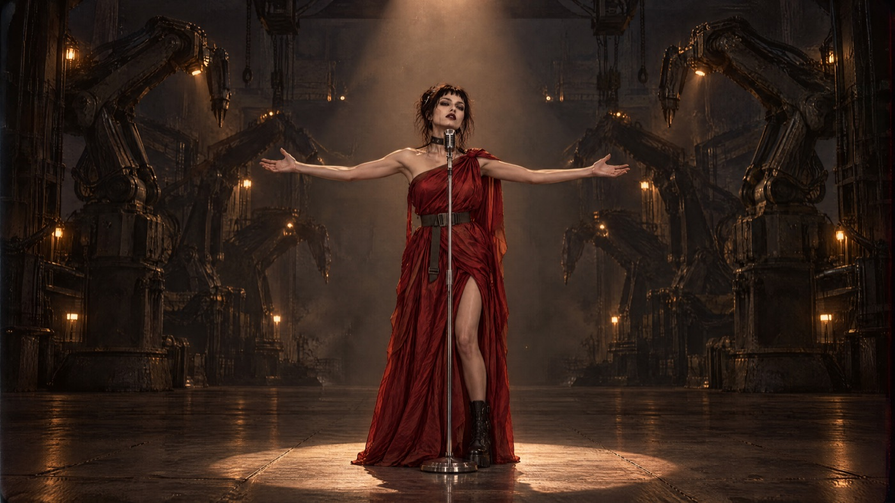
Great as a picture, weak as a singing shot. It stayed in the cut for the first and last line.
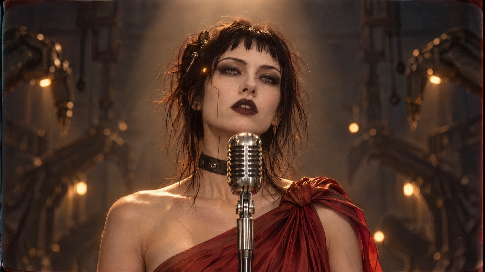
The face fills the frame, so 720p holds up. This is also the cover of this page.
Then the effects layer. Alex: "first of all animate the stills. The animated parts can be touched but lightly." Each still got a depth map made locally, so the camera can orbit a little and the foreground moves against the background. Lamps and screens flicker, dust floats in the light. Clips only get the colour grade and a lyric line.
Moves stay small: an orbit of about 3 percent and a dolly of up to 10 percent. Anything bigger stretches at the depth edges. The depth maps cost nothing; they ran on the laptop CPU.
Act 5 · the screens
The ship is full of old screens, and the song is about reports nobody reads. Image models cannot be trusted with exact text or digits, so every screen was made blank on purpose and its content drawn in code, timed to the song. The text is typed on the measured sung words, bars follow the real spectrum, lights flash on the kicks.
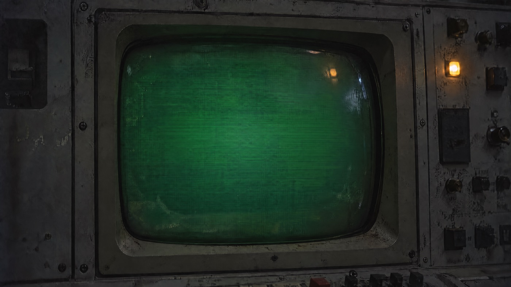
First made with the title on it, then edited empty. Alex wanted the words typed as she sings them.
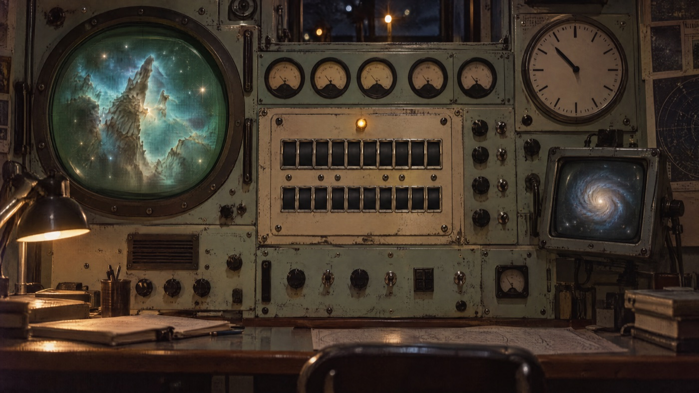
The third version. Green CRT text was "getting repetitive", so the star count moved to mechanical counter wheels, then to a whole different room.
A pulsar spins once per beat. The image model painted the beams in, fixed, so they were edited out and drawn in code: two cones from the poles, and a flash when a beam sweeps past the lens. The first version flashed four times a second, all the same. Alex: "It doesn't pulse in rhythm". The flashes were on time; with no accent the eye lost the kick. Now the main pulse snaps on with the kick and the second beam is a weak interpulse, like a real pulsar.
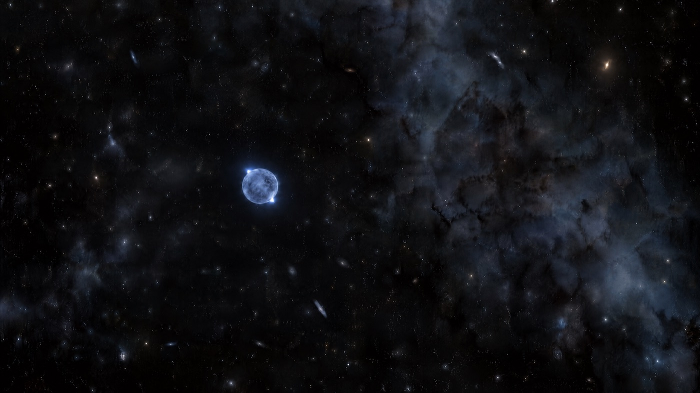
Only the hot spots kept. The beams come from code.
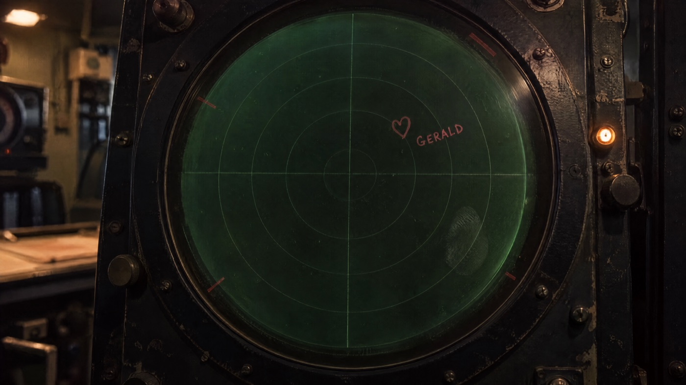
The model drew the grease-pencil heart. The sweep, the blips and their labels are code. The sweep crosses Gerald's blip on the word "Gerald".
The ending repeats "Nothing to report" seven times, so it got seven screens, one per repeat. Alex asked that none of them reuse an earlier plate, so three new ones were made: an LED sign over an airlock, a hi-fi with an amber display in a crew cabin, and a wall of CRTs.
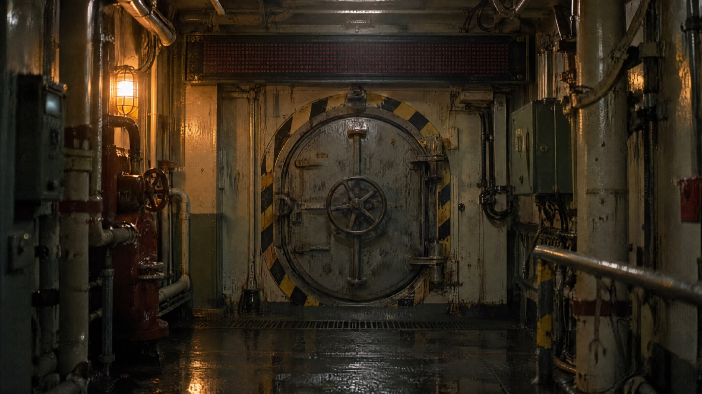
Each red dot sampled from text drawn off screen. It scrolls like a railway sign.
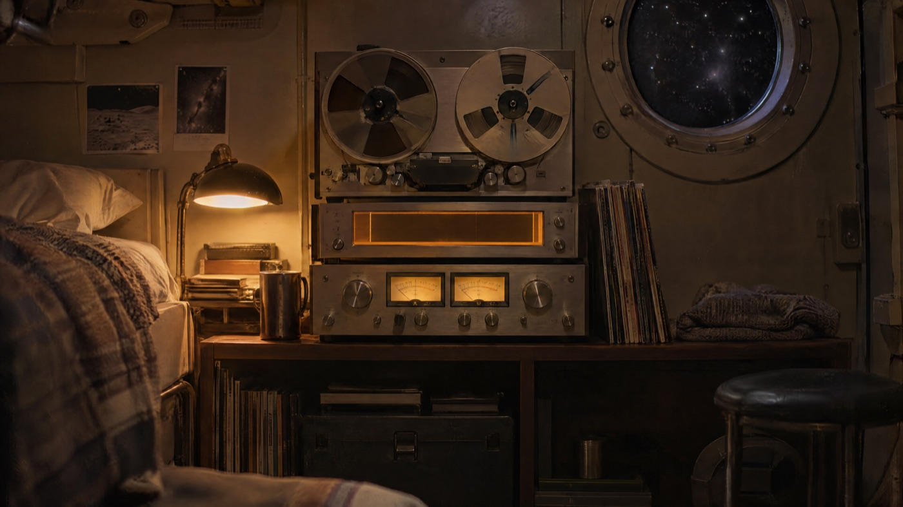
Text on the left, the song's spectrum on the right. The first render drew the bars off the display; an old copy of the code had drifted.
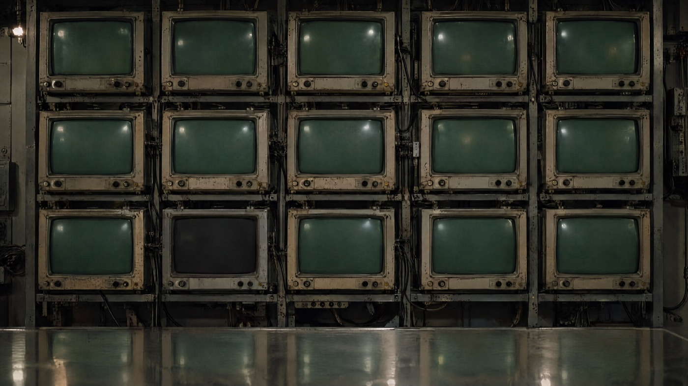
Thirteen screens light up one per sixteenth note. The dead one stays dead.
The full set: CRT typing, a VFD with spectrum bars and lamps, counter wheels, ship logs, the pulsar, teleprinter ink, the radar, pencil orbits drawn on graph paper, docking lights blinking on the kicks, a flat-line oscilloscope, the LED sign, the tube switch-off. All $0.
Act 6 · failures
A list of what the models got wrong, and what each one cost to fix. Some fixes were free. Most were another generation.
Too perfect to be a photo. An asteroid field with real depth replaced it. The galaxy survived only as a small picture on a monitor.
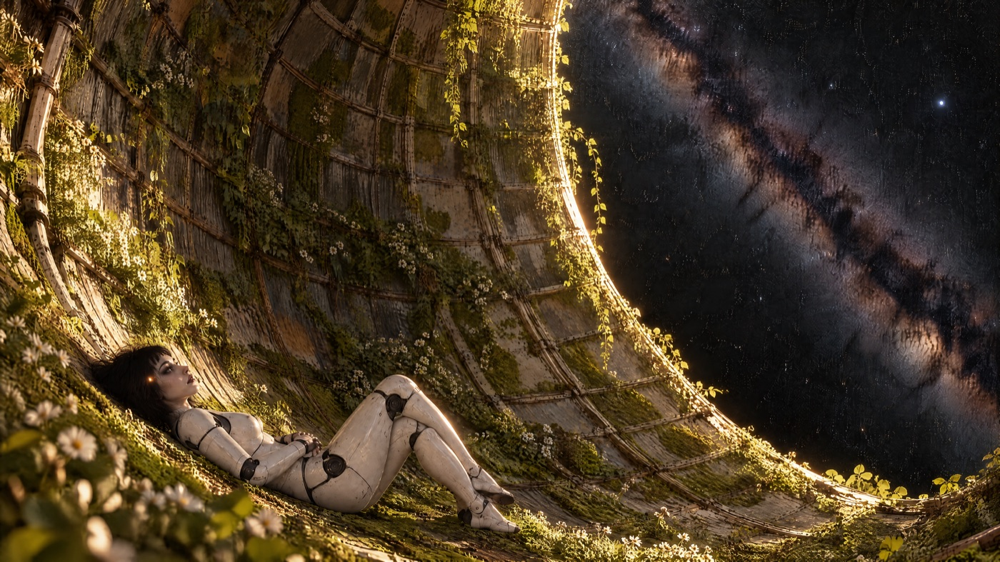
Asked for a rigid shell and a new angle. Got the same angle and a garden. The next prompt ended with "No plants".
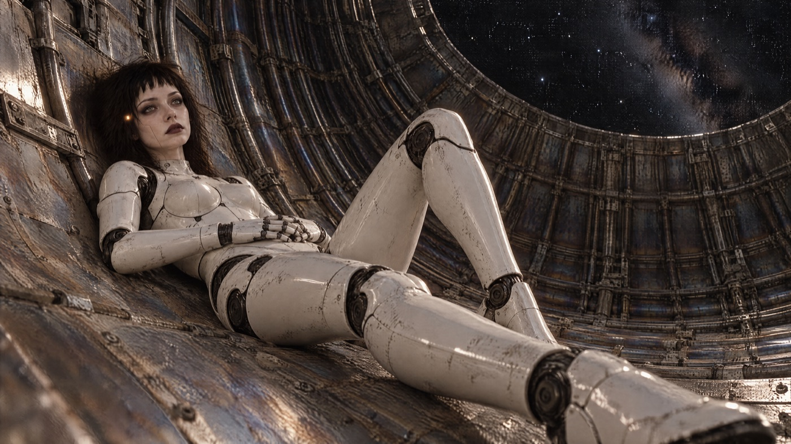
Only one reference this time, no old nozzle. Bare metal, long legs, a rigid shell.
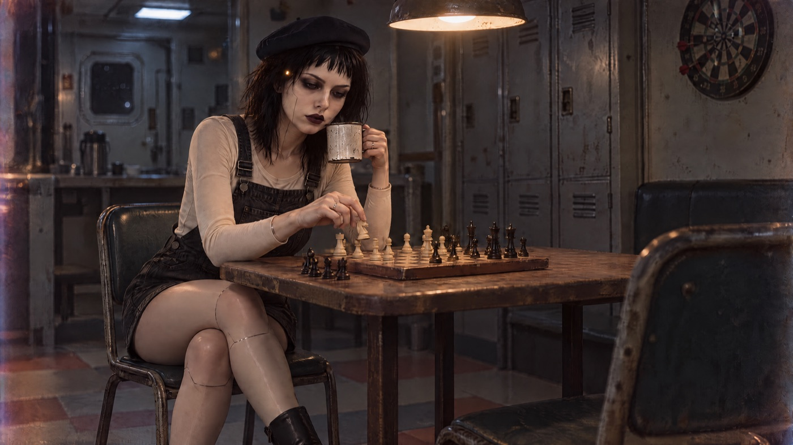
Asked for the other side of the table. The model gave the same angle and put a mug in her hand.
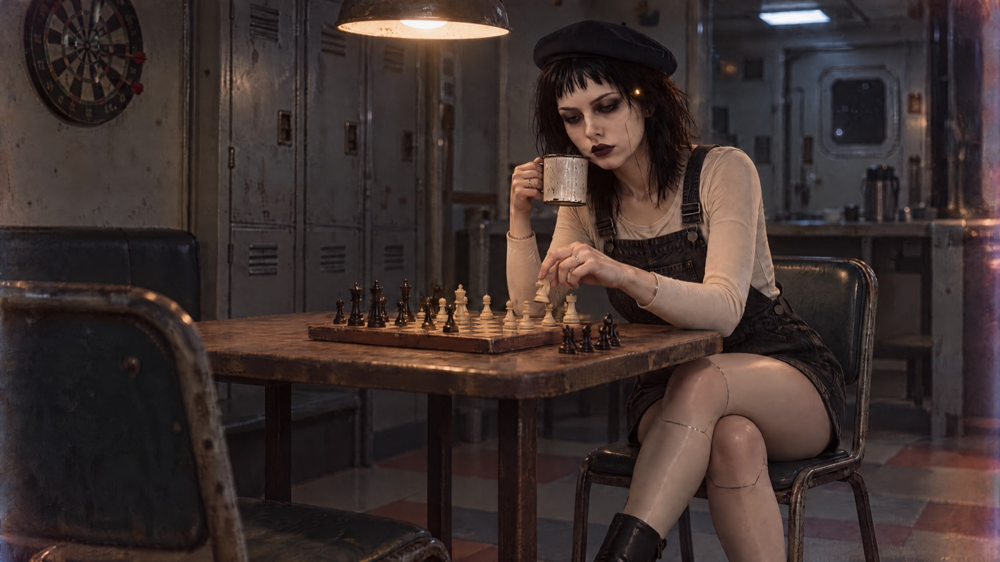
Mirrored. White faces right, black faces left: it cuts as shot and reverse shot. $0.
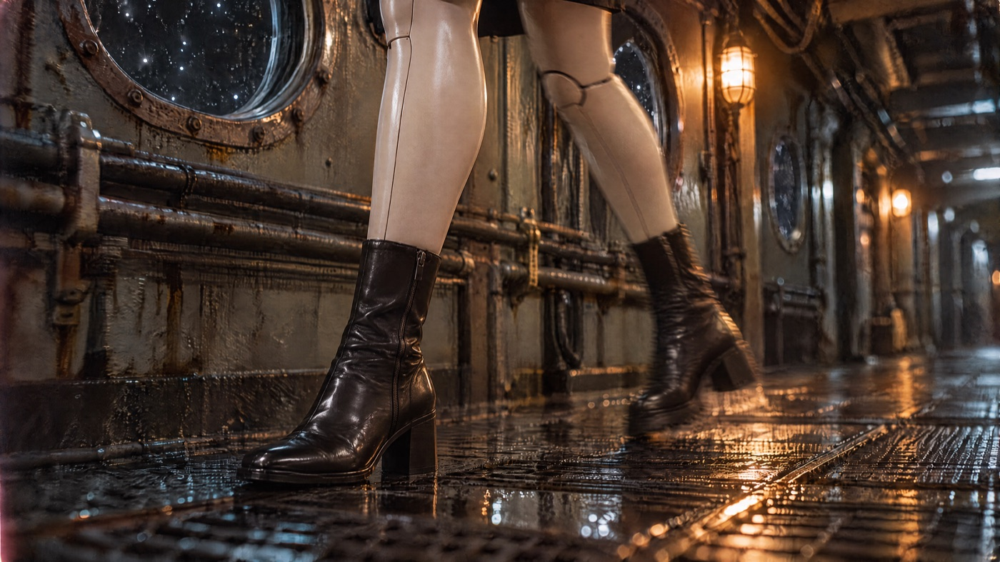
Bare porcelain legs read as a shop mannequin. Alex pointed at the legs on the character sheet instead.
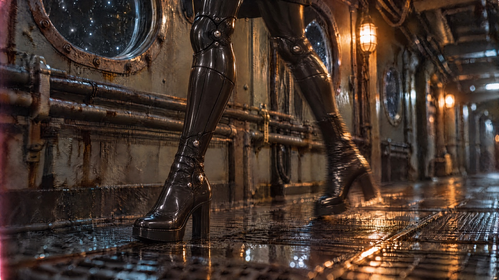
Glossy suit legs, bolted knees, platform heels. This is the opening walk.
A lazy leg swing while she lies in the engine nozzle. Alex on the first clip: legs too short, and the top leg's shell bends like rubber. He wanted a rigid shell. The second clip kept the shell rigid, but she lost her heels and her face and body were frozen, because the prompt had locked everything except the legs. The third one asked for the opposite: look into the camera, breathe, move a little.
The dish shot became a clip: she climbs onto the rim. Alex: still not great; she should not climb but step up, one leg already on the rim, with the camera moving around her. The first start frame for that came back identical to the old image. The second try used a different reference and worked. "Alex likes the step-up."
Pattern: Seedance follows "camera locked on a tripod" very well and camera moves poorly. Giving it both the first and the last frame is the reliable way to get a real move. And when a prompt freezes everything but one body part, it freezes the face too.
Act 7 · the outro
The first full ending was two long shots: the ship zooming out for eight and a half seconds, then one green CRT typing the last seven lines for thirteen. Alex: the two long end scenes are boring.
The static ship before the montage clashed with the ship in the asteroids. Alex asked for a big screen running termination logs with errors, in the ship's diner. The log types NOTHING ELSE as she sings "Nothing else". It first stopped there; Alex: "do not stop the log". So it keeps scrolling to the cut.
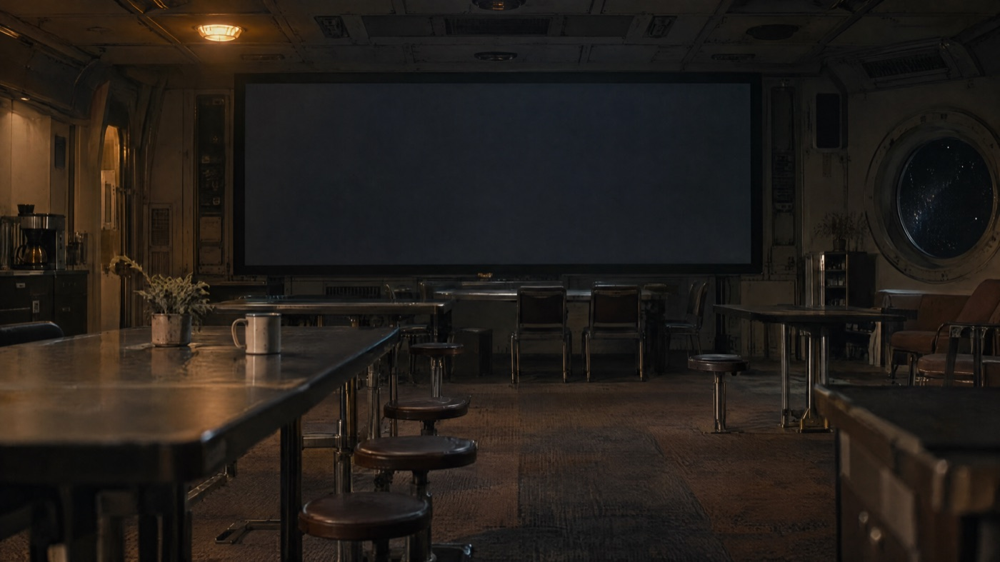
A forgotten mug, a dusty plant. The wall screen is blank for the log.
Eight and a half seconds of cuts on the beat: the ship in an asteroid field, the stage machines dancing alone, one flare of the red dress, a ringed planet, the machines again, the leg switch, the disco ball, an earthrise, and only then two seconds of the ship zooming out. A distance counter runs underneath at 0.31 c.
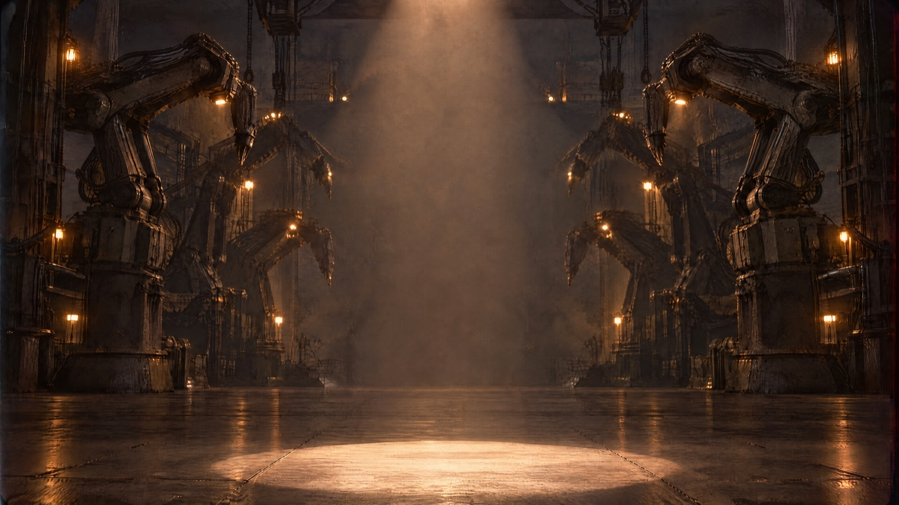
The bridge stage with her removed. A 4 s clip makes the machines dance on their own. $1.17.
Then seven screens, one per "Nothing to report" (Act 5), the CRT wall, and the tube switching off. On black: END OF LOG, DAY 4013. The day counter that sat small in the corner all film comes in big for "Still here" and ticks over from 4012 to 4013 for the first time.
The build ended on eight seconds of a pulsar speeding up. Alex: too long. His idea: the pulsar dims and turns into a disco ball in the same spot, spinning at the same speed, then a dance on the red-dress stage. The ball was edited into the same space plate, so the dissolve keeps every star in place. The dance clip had three big dress flares. Alex: "extend the disco ball, one dress wave only."
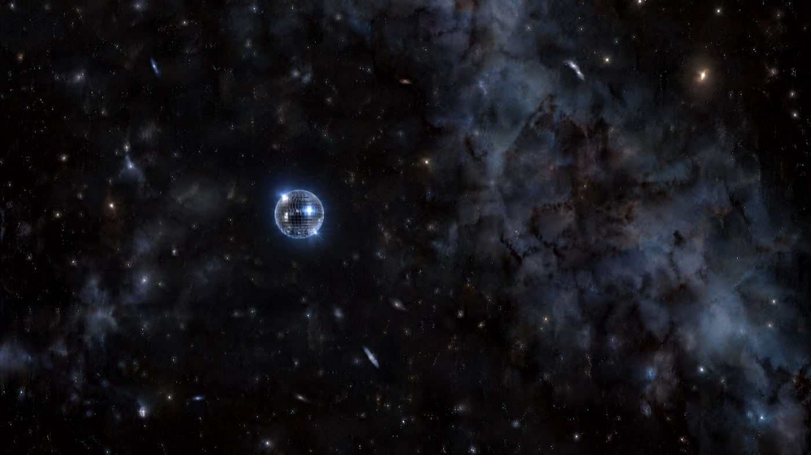
About twice the size of the star, not a fifth of the frame. The first try was too big and in the wrong place.
Act 8 · the finish
Alex said the picture felt below 1080p. True: every clip comes out of Seedance at 1280 x 720. Running Real-ESRGAN on the laptop took about 20 seconds a frame, around 20 hours for the whole film, and it waxed the skin. Two cloud upscalers were tested on the bridge clip. Alex picked SeedVR2: "It's good actually".
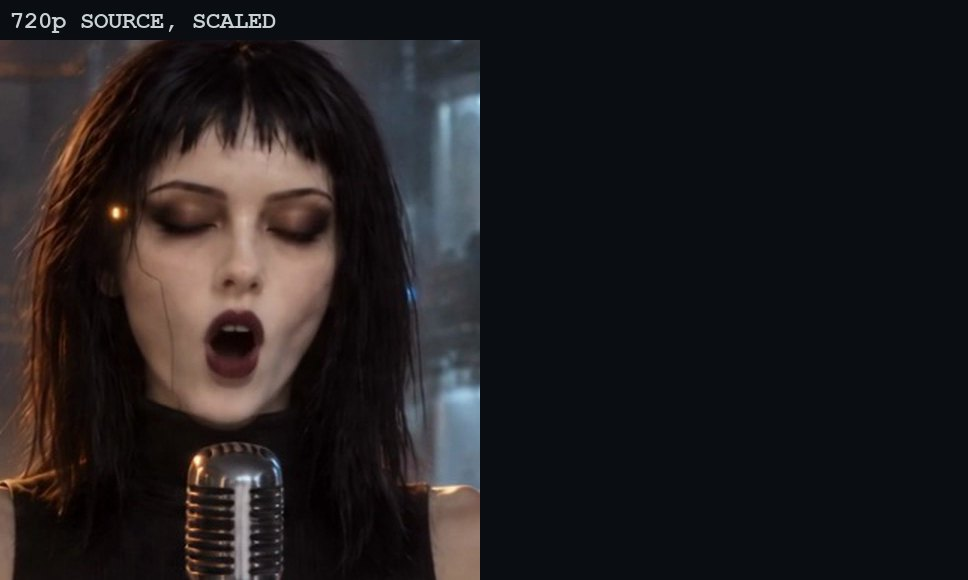
Eyes, hair strands, the mic grille: sharper. Mouth shapes stayed identical frame for frame, so the lip sync work survived. All 32 clips in the cut, about 35 minutes with four running at once.
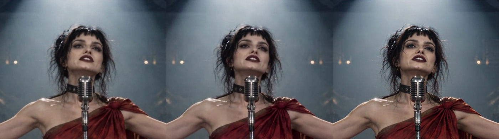
Stretch, Topaz, SeedVR2. Both cloud tools were close; SeedVR2 was cheaper.
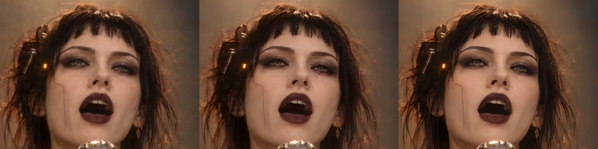
Free, but 20 hours, and the grain was gone.
The whole edit is a JSON file of 157 shots, rendered frame by frame in a headless browser. A full render took about 25 minutes, and Alex's notes came faster than that. Alex: do not re-render everything each time. The renderer now cuts the song into 8 s chunks, keeps each finished chunk by a fingerprint of its shots, and renders four at a time. A cold build took 8 minutes; a build with no changes renders nothing and only joins the chunks.
| Item | Detail | Cost |
|---|---|---|
| 36 video clips | Seedance 2.5 via evolink, 720p, 4-15 s; 11 of them sing | $63.65 |
| 125 images | gpt-image-2.5 Sunburst, most at 3840 x 2160, nearly all edits with references | $13.32 |
| Upscale | SeedVR2 on fal, 32 clips to 1080p | $9.47 |
| Upscale tests | Topaz and SeedVR2 on one 15 s clip | $1.65 |
| Everything else | vocal stems, transcripts, depth maps, masks, every render, every screen effect: local | $0.00 |
| Total | a four-minute film | $88.08 |
Where the money went: the long singing clips are the expensive part: 14-15 s cost $4.10-4.40 each. The three clips killed outright in Act 6 cost $3.51. The cheapest fixes were the free ones: a mirrored image, a remapped clip, a retimed boot.
Still here. Still going.Day 4012, and then 4013